Why save our planet now?
The current climate crisis
Climate experts predict that in 9 years, we will have reached the point of no return. This can be fixed if we all work now to reduce our carbon footprint, but I have found the problem of adjusting to a more sustainable lifestyle is lack of knowledge.
How does this website help people?
Save our Planet centralizes information on how we can be more sustainable so that people don't need to waste time searching online. I want to provide eco-friendly alternatives that mimic the experience of wasteful products.
Why should I care?
When reflecting on my own life, I recognized that most of the experiences I am most grateful for are associated with the climate. Below, I have shown my favorite parts about the planet, and I don't think future generations deserve to experience life without them. What parts of the planet do you value the most?
 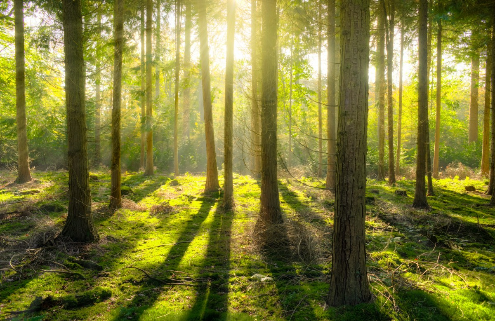
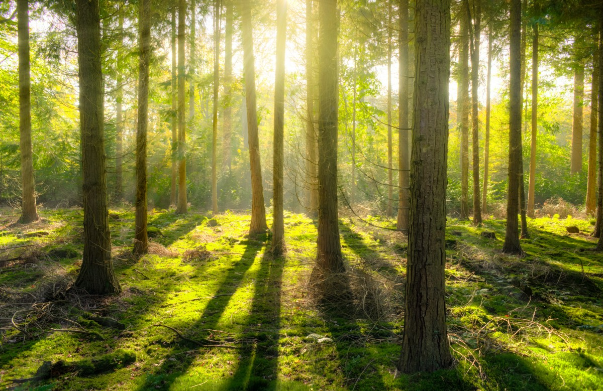
 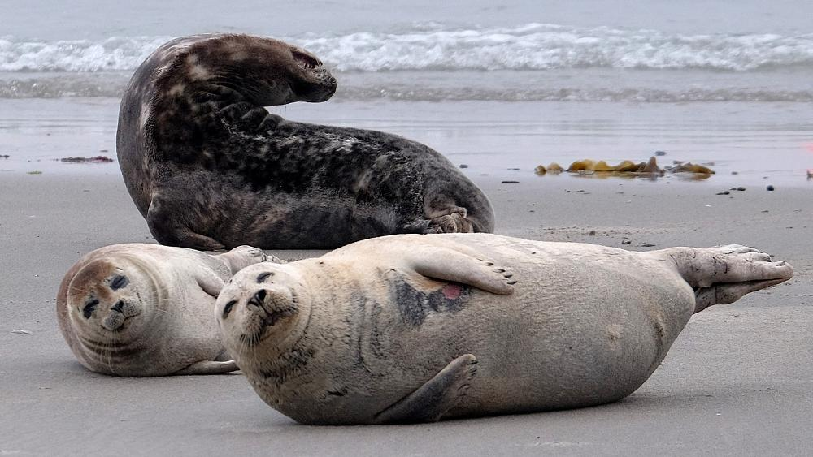
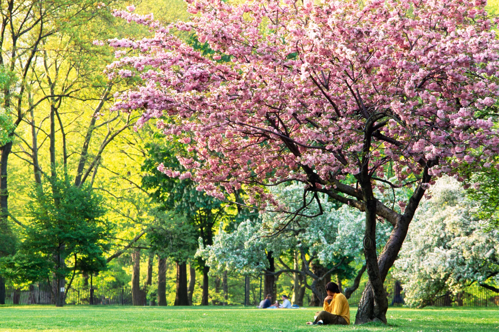
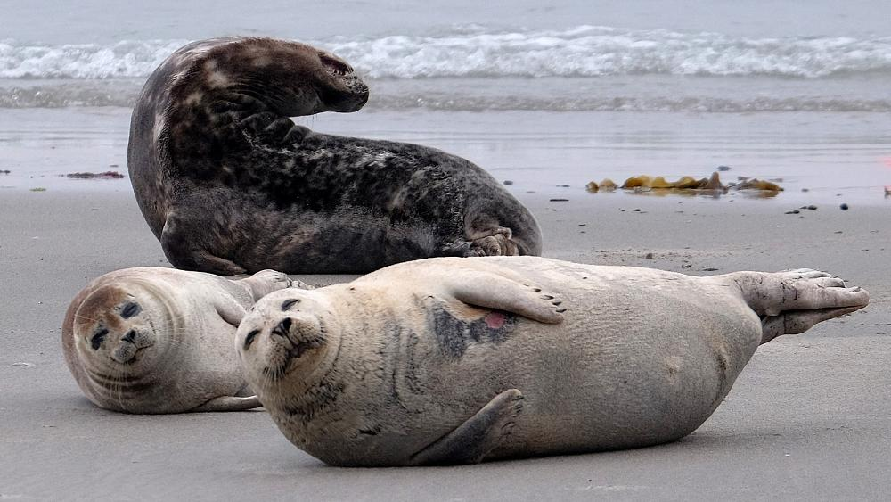
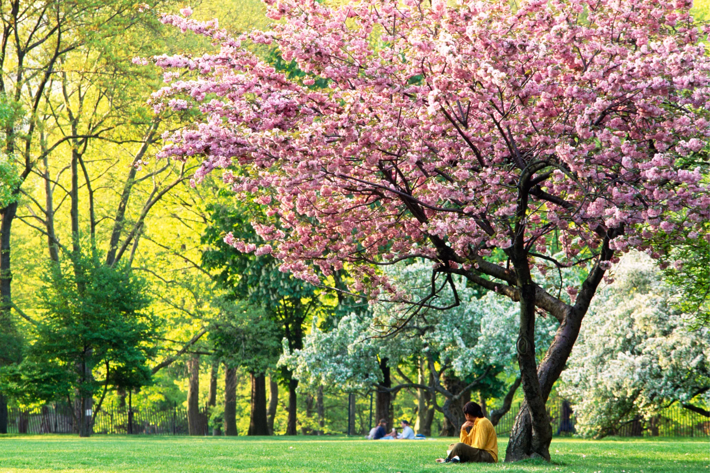
 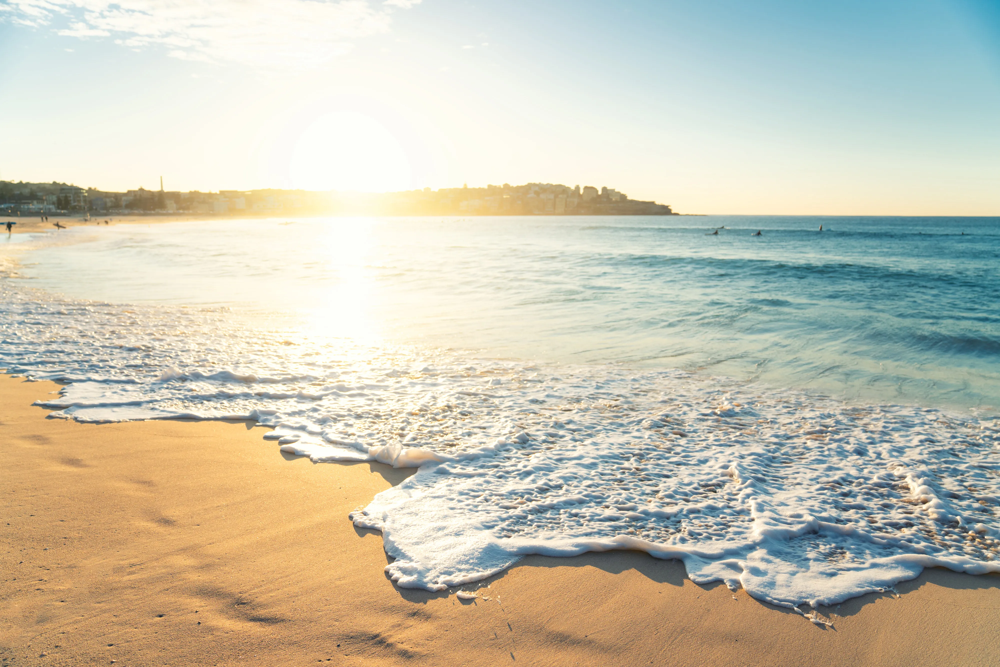
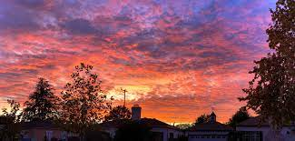
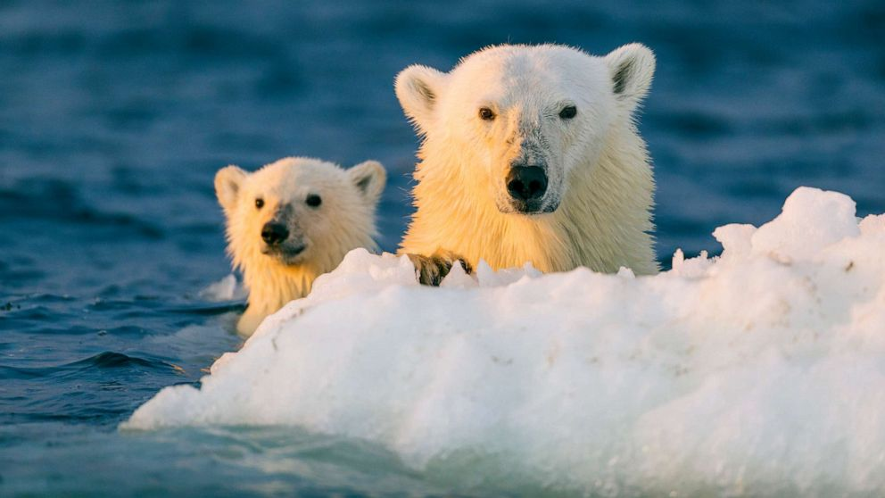
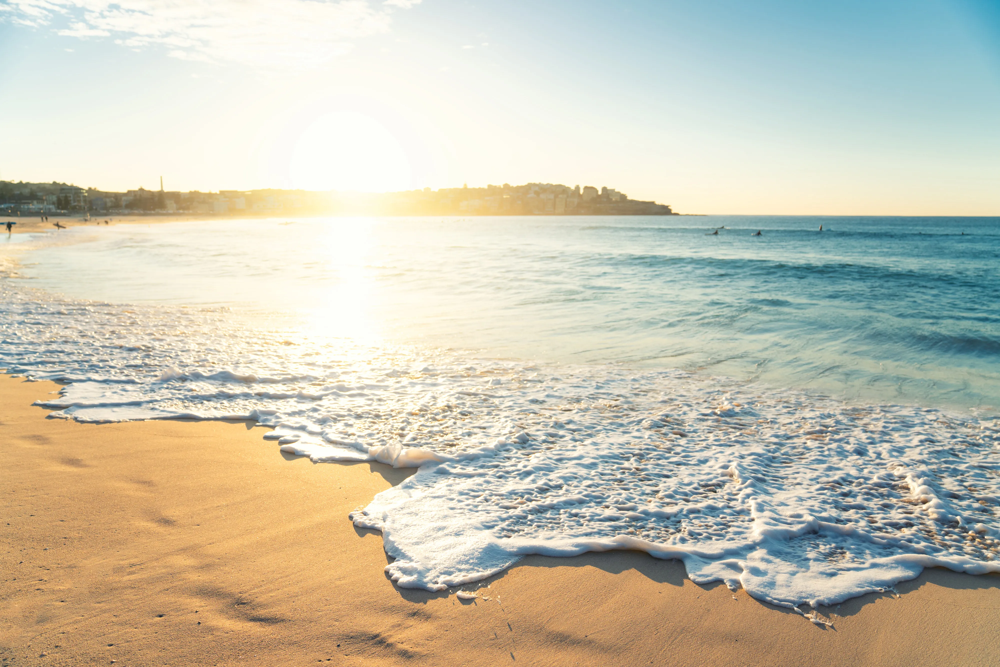
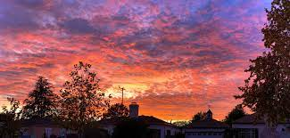
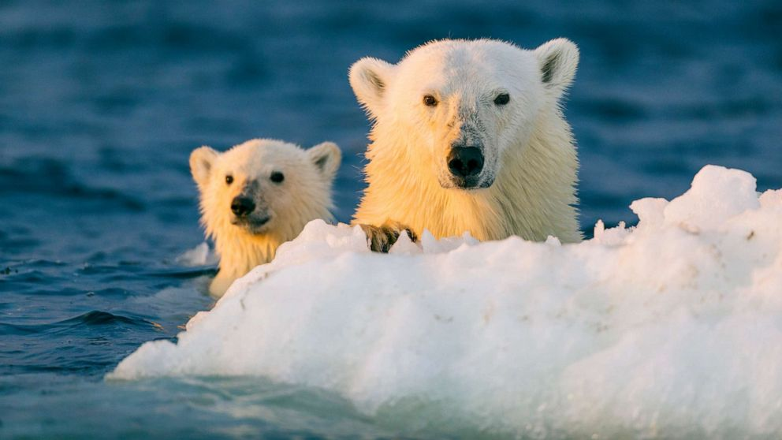
Start exploring
To start your eco-friendly journey, I recommend you to explore the products under the "Sustainable Products" tab for reference. Explore products